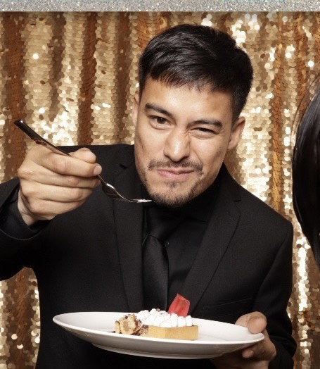

Established in 2019, Pagrachu is Ottawa's spot for Latin American food. Based in Centretown, Ottawa, we have been operating and growing fast for two years. Serving authentic Colombian food, we provide the best of those flavours here in Ottawa. Regardless of our Colombian history, we also incorporate other Hispanic dishes. Join our home away from home!
John Alejandro Rodriguez is the proud owner of Pagrachu. Independently started, Alejandro was the best cook in his hometown. Moving to Canada was the most difficult decision in his life. Alejandro had an opportunity here and decided to go full blast. Embarking on his journey to Canada was difficult. Being a first-generation immigrant in Canada was not for the faint of heart; he says, "As I grew up in a Larin community, coming to Canada was a culture shock. The Western society is similar, yet so different to my cultural background". As many first-generation immigrants and kids of those immigrants feel the same way. "I know what it is like to feel left out or unheard; the connection I felt with people here when I first came felt so unwelcoming. "That is why his mission is to make everyone feel comfortable and safe at Pagrachu. Being in unfamiliar territory is scary and makes you re-think if the decisions made were for the best. However, Alejandro quickly turned his worst nightmare into his biggest dream. "For two years, I could not make friends, understand Ottawa and feel connected with my culture. Despite those hardships, I made it work, and by being positive, everything seemed to work out...like a lion was unleashed in me".